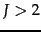
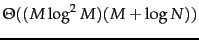
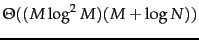
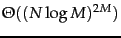
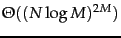
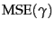

As discussed in Chapter 9 , Rocchio relevance feedback is due to Rocchio (1971). Joachims (1997) presents a probabilistic analysis of the method. Rocchio classification was widely used as a classification method in in the 1990s (Buckley et al., 1994b;a, Voorhees and Harman, 2005). Initially, it was used as a form of routing . Routing merely ranks documents according to relevance to a class without assigning them. Early work on filtering , a true classification approach that makes an assignment decision on each document, was published by Ittner et al. (1995) and Schapire et al. (1998). The definition of routing we use here should not be confused with another sense. Routing can also refer to the electronic distribution of documents to subscribers, the so-called push model of document distribution. In a pull model , each transfer of a document to the user is initiated by the user - for example, by means of search or by selecting it from a list of documents on a news aggregation website.
Some authors restrict the name Roccchio classification to two-class problems and use the terms cluster-based (Iwayama and Tokunaga, 1995) and centroid-based classification (Han and Karypis, 2000, Tan and Cheng, 2007) for Rocchio classification with .
A more detailed treatment of kNN can be found in (Hastie et al., 2001), including methods for tuning the parameter  . An example of an approximate fast kNN algorithm is locality-based hashing (Andoni et al., 2006). Kleinberg (1997) presents an approximate
 kNN algorithm (where
. An example of an approximate fast kNN algorithm is locality-based hashing (Andoni et al., 2006). Kleinberg (1997) presents an approximate
 kNN algorithm (where  is the dimensionality of the space and
is the dimensionality of the space and  the number of data points), but at the cost of exponential storage requirements:
. Indyk (2004) surveys nearest neighbor methods in high-dimensional spaces. Early work on kNN in text classification was motivated by the availability of massively parallel hardware architectures (Creecy et al., 1992). Yang (1994) uses an inverted index to speed up kNN classification. The optimality result for 1NN (twice the Bayes error rate asymptotically) is due to Cover and Hart (1967).
the number of data points), but at the cost of exponential storage requirements:
. Indyk (2004) surveys nearest neighbor methods in high-dimensional spaces. Early work on kNN in text classification was motivated by the availability of massively parallel hardware architectures (Creecy et al., 1992). Yang (1994) uses an inverted index to speed up kNN classification. The optimality result for 1NN (twice the Bayes error rate asymptotically) is due to Cover and Hart (1967).
The effectiveness of Rocchio classification and kNN is highly dependent on careful parameter tuning (in particular, the parameters for Rocchio on page 14.2 and  for kNN), feature engineering svm-text and feature selection feature. Buckley and Salton (1995), Yang and Kisiel (2003), Schapire et al. (1998) and Moschitti (2003) address these issues for Rocchio and Yang (2001) and Ault and Yang (2002) for kNN. Zavrel et al. (2000) compare feature selection methods for kNN.
for kNN), feature engineering svm-text and feature selection feature. Buckley and Salton (1995), Yang and Kisiel (2003), Schapire et al. (1998) and Moschitti (2003) address these issues for Rocchio and Yang (2001) and Ault and Yang (2002) for kNN. Zavrel et al. (2000) compare feature selection methods for kNN.
The bias-variance tradeoff was introduced by Geman et al. (1992). The derivation in Section 14.6 is for , but the tradeoff applies to many loss functions (cf. Friedman (1997), Domingos (2000)). Schütze et al. (1995) and Lewis et al. (1996) discuss linear classifiers for text and Hastie et al. (2001) linear classifiers in general. Readers interested in the algorithms mentioned, but not described in this chapter may wish to consult Bishop (2006) for neural networks, Hastie et al. (2001) for linear and logistic regression, and Minsky and Papert (1988) for the perceptron algorithm . Anagnostopoulos et al. (2006) show that an inverted index can be used for highly efficient document classification with any linear classifier, provided that the classifier is still effective when trained on a modest number of features via feature selection.
We have only presented the simplest method for combining two-class classifiers into a one-of classifier. Another important method is the use of error-correcting codes, where a vector of decisions of different two-class classifiers is constructed for each document. A test document's decision vector is then ``corrected'' based on the distribution of decision vectors in the training set, a procedure that incorporates information from all two-class classifiers and their correlations into the final classification decision (Dietterich and Bakiri, 1995). Ghamrawi and McCallum (2005) also exploit dependencies between classes in any-of classification. Allwein et al. (2000) propose a general framework for combining two-class classifiers.